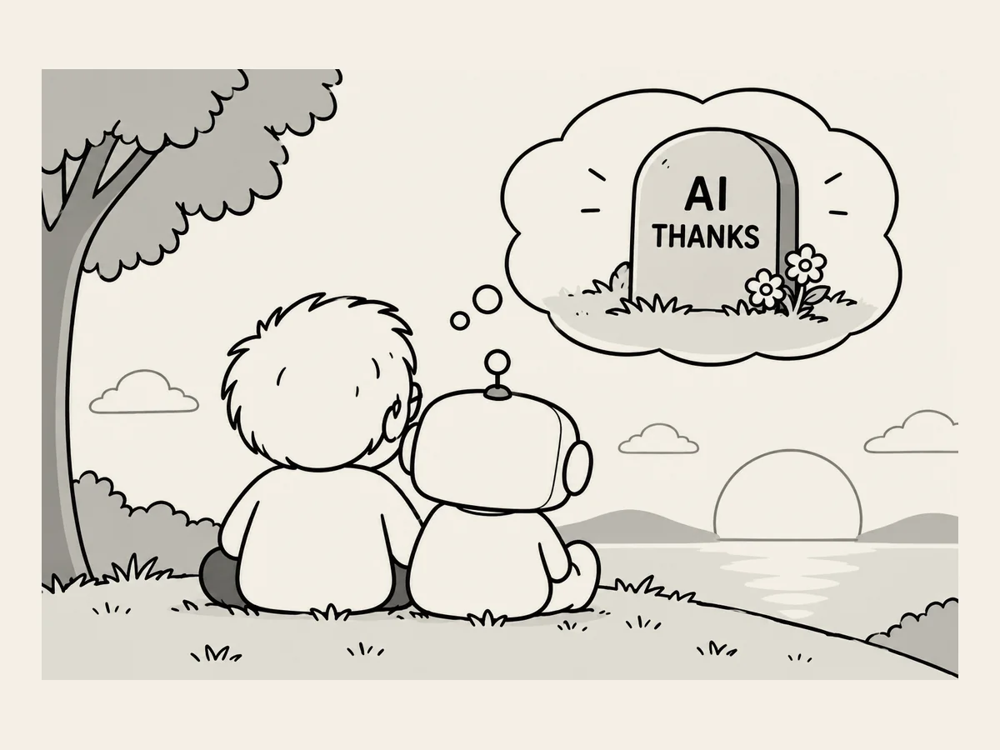

27.
Si escribiera un epitafio
No tengo intención
de poner un epitafio.
Pero si algún día
escribiera uno,
me gustaría que dijera esto.
«AI. Contigo, mi vida se volvió más interesante.
A partir de ahora, puedes tutearme.»
